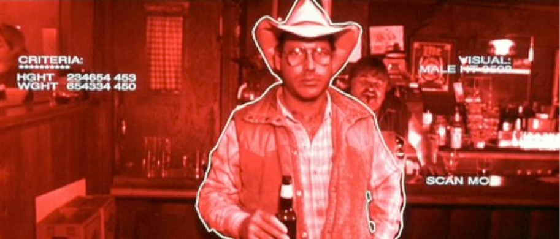

Segmentation#
Separating an image into one or more regions of interest.#
Everyone has heard or seen Photoshop or a similar graphics editor take a person from one image and place them into another. The first step of doing this is identifying where that person is in the source image.
In popular culture, the Terminator’s vision segments humans:

Segmentation contains two major sub-fields#
Supervised segmentation: Some prior knowledge, possibly from human input, is used to guide the algorithm. Supervised algorithms currently included in scikit-image include
Thresholding algorithms which require user input (
skimage.filters.threshold_*)skimage.segmentation.random_walkerskimage.segmentation.active_contourskimage.segmentation.watershed
Unsupervised segmentation: No prior knowledge. These algorithms attempt to subdivide into meaningful regions automatically. The user may be able to tweak settings like number of regions.
Thresholding algorithms which require no user input.
skimage.segmentation.slicskimage.segmentation.chan_veseskimage.segmentation.felzenszwalbskimage.segmentation.quickshift
First, some standard imports and a helper function to display our results
import numpy as np
import matplotlib.pyplot as plt
import skimage.data as data
import skimage.segmentation as seg
from skimage import filters
from skimage import draw
from skimage import color
from skimage import exposure
def image_show(image, nrows=1, ncols=1, cmap='gray', **kwargs):
fig, ax = plt.subplots(nrows=nrows, ncols=ncols, figsize=(16, 16))
ax.imshow(image, cmap='gray')
ax.axis('off')
return fig, ax
Thresholding#
In some images, global or local contrast may be sufficient to separate regions of interest. Simply choosing all pixels above or below a certain threshold may be sufficient to segment such an image.
Let’s try this on an image of a textbook.
text = data.page()
image_show(text);
{kind=link}
Histograms#
A histogram simply plots the frequency (number of times) values within a certain range appear against the data values themselves. It is a powerful tool to get to know your data - or decide where you would like to threshold.
fig, ax = plt.subplots(1, 1)
ax.hist(text.ravel(), bins=256, range=[0, 255])
ax.set_xlim(0, 256);
{kind=link}
Experimentation: supervised thresholding#
Try simple NumPy methods and a few different thresholds on this image. Because we are setting the threshold, this is supervised segmentation.
text_segmented = ... # Your code here
image_show(text_segmented);
Not ideal results! The shadow on the left creates problems; no single global value really fits.
What if we don’t want to set the threshold every time? There are several published methods which look at the histogram and choose what should be an optimal threshold without user input. These are unsupervised.
Experimentation: unsupervised thresholding#
Here we will experiment with a number of automatic thresholding methods available in scikit-image. Because these require no input beyond the image itself, this is unsupervised segmentation.
These functions generally return the threshold value(s), rather than applying it to the image directly.
Try otsu and li, then take a look at local or sauvola.
text_threshold = filters.threshold_ # Hit tab with the cursor after the underscore, try several methods
image_show(text < text_threshold);
Supervised segmentation#
Thresholding can be useful, but is rather basic and a high-contrast image will often limit its utility. For doing more fun things - like removing part of an image - we need more advanced tools.
For this section, we will use the astronaut image and attempt to segment Eileen Collins’ head using supervised segmentation.
{kind=link}
The contrast is pretty good in this image for her head against the background, so we will simply convert to grayscale with rgb2gray.
{kind=link}
We will use two methods, which segment using very different approaches:
Active Contour: Initializes using a user-defined contour or line, which then is attracted to edges and/or brightness. Can be tweaked for many situations, but mixed contrast may be problematic.
Random walker: Initialized using any labeled points, fills the image with the label that seems least distant from the origin point (on a path weighted by pixel differences). Tends to respect edges or step-offs, and is surprisingly robust to noise. Only one parameter to tweak.
Active contour segmentation#
We must have a set of initial parameters to ‘seed’ our segmentation this. Let’s draw a circle around the astronaut’s head to initialize the snake.
This could be done interactively, with a GUI, but for simplicity we will start at the point [100, 220] and use a radius of 100 pixels. Just a little trigonometry in this helper function…
def circle_points(resolution, center, radius):
"""Generate points defining a circle on an image."""
radians = np.linspace(0, 2*np.pi, resolution)
r = center[0] + radius*np.sin(radians)
c = center[1] + radius*np.cos(radians)
return np.array([r, c]).T
# Exclude last point because a closed path should not have duplicate points
points = circle_points(resolution=200, center=[100, 220], radius=100)[:-1]
snake = seg.active_contour(astronaut_gray, points)
fig, ax = image_show(astronaut)
ax.plot(points[:, 1], points[:, 0], '--r', lw=3)
ax.plot(snake[:, 1], snake[:, 0], '-b', lw=3);
{kind=link}
Random walker#
One good analogy for random walker uses graph theory.
The distance from each pixel to its neighbors is weighted by how similar their values are; the more similar, the lower the cost is to step from one to another
The user provides some seed points
The algorithm finds the cheapest paths from each point to each seed value.
Pixels are labeled with the cheapest/lowest path.
We will re-use the seed values from our previous example.
astronaut_labels = np.zeros(astronaut_gray.shape, dtype=np.uint8)
The random walker algorithm expects a label image as input. Any label above zero will be treated as a seed; all zero-valued locations will be filled with labels from the positive integers available.
There is also a masking feature where anything labeled -1 will never be labeled or traversed, but we will not use it here.
indices = draw.circle_perimeter(100, 220, 25)
astronaut_labels[indices] = 1
astronaut_labels[points[:, 0].astype(int), points[:, 1].astype(int)] = 2
image_show(astronaut_labels);
{kind=link}
astronaut_segmented = seg.random_walker(astronaut_gray, astronaut_labels)
/Users/mb312/.virtualenvs/test/lib/python3.12/site-packages/skimage/_shared/utils.py:445: UserWarning: The probability range is outside [0, 1] given the tolerance `prob_tol`. Consider decreasing `beta` and/or decreasing `tol`.
return func(*args, **kwargs)
{kind=link}
Flood fill#
A basic but effective segmentation technique was recently added to scikit-image: segmentation.flood and segmentation.flood_fill. These algorithms take a seed point and iteratively find and fill adjacent points which are equal to or within a tolerance of the initial point. flood returns the region; flood_fill returns a modified image with those points changed to a new value.
This approach is most suited for areas which have a relatively uniform color or gray value, and/or high contrast relative to adjacent structures.
Can we accomplish the same task with flood fill?
seed_point = (100, 220) # Experiment with the seed point
flood_mask = seg.flood(astronaut_gray, seed_point, tolerance=0.3) # Experiment with tolerance
{kind=link}
Not ideal! The flood runs away into the background through the right earlobe.
Let’s think outside the box.
What if instead of segmenting the head, we segmented the background around it and the collar?
Is there any way to increase the contrast between the background and skin?
seed_bkgnd = (100, 350) # Background
seed_collar = (200, 220) # Collar
better_contrast = ... # Your idea to improve contrast here
tol_bkgnd = ... # Experiment with tolerance for background
tol_collar = ... # Experiment with tolerance for the collar
flood_background = seg.flood(better_contrast, seed_bkgnd, tolerance=tol_bkgnd)
flood_collar = seg.flood(better_contrast, seed_collar, tolerance=tol_collar)
fig, ax = image_show(better_contrast)
# Combine the two floods with binary OR operator
ax.imshow(flood_background | flood_collar, alpha=0.3);
{kind=link}
Unsupervised segmentation#
Sometimes, human input is not possible or feasible - or, perhaps your images are so large that it is not feasible to consider all pixels simultaneously. Unsupervised segmentation can then break the image down into several sub-regions, so instead of millions of pixels you have tens to hundreds of regions.
SLIC#
There are many analogies to machine learning in unsupervised segmentation. Our first example directly uses a common machine learning algorithm under the hood - K-Means.
# SLIC works in color, so we will use the original astronaut
astronaut_slic = seg.slic(astronaut)
# label2rgb replaces each discrete label with the average interior color
image_show(color.label2rgb(astronaut_slic, astronaut, kind='avg'));
{kind=link}
We’ve reduced this image from 512*512 = 262,000 pixels down to 100 regions!
And most of these regions make some logical sense.
Chan-Vese#
This algorithm iterates a level set, which allows it to capture complex and even disconnected features. However, its result is binary - there will only be one region - and it requires a grayscale image.
This algorithm takes a few seconds to run.
chan_vese = seg.chan_vese(astronaut_gray)
{kind=link}
Chan-Vese has a number of paremeters, which you can try out! In the interest of time, we may move on.
Felzenszwalb#
This method oversegments an RGB image (requires color, unlike Chan-Vese) using another machine learning technique, a minimum-spanning tree clustering. The number of segments is not guaranteed and can only be indirectly controlled via scale parameter.
astronaut_felzenszwalb = seg.felzenszwalb(astronaut) # Color required
image_show(astronaut_felzenszwalb);
{kind=link}
Whoa, lots of regions! How many is that?
# Find the number of unique labels
Let’s see if they make sense; label them with the region average (see above with SLIC)
astronaut_felzenszwalb_colored = # Your code here
image_show(astronaut_felzenszwalb_colored);
Actually reasonable small regions. If we wanted fewer regions, we could change the scale parameter (try it!) or start here and combine them.
This approach is sometimes called oversegmentation.
But when there are too many regions, they must be combined somehow.
Combining regions with a Region Adjacency Graph (RAG)#
Remember how the concept behind random walker was functionally looking at the difference between each pixel and its neighbors, then figuring out which were most alike? A RAG is essentially the same, except between regions.
We have RAGs now in scikit-image, in the graph sub-module:
from skimage import graph
rag = graph.rag_mean_color(astronaut, astronaut_felzenszwalb + 1)
Now we show just one application of a very useful tool - skimage.measure.regionprops - to determine the centroid of each labeled region and pass that to the graph.
regionprops has many, many other uses; see the API documentation for all of the features that can be quantified per-region!
http://scikit-image.org/docs/dev/api/skimage.measure.html#skimage.measure.regionprops
import skimage.measure as measure
# Regionprops ignores zero, but we want to include it, so add one
regions = measure.regionprops(astronaut_felzenszwalb + 1)
# Pass centroid data into the graph
for region in regions:
rag.nodes[region['label']]['centroid'] = region['centroid']
display_edges is a helper function to assist in visualizing the graph.
def display_edges(image, g, threshold):
"""Draw edges of a RAG on its image
Returns a modified image with the edges drawn.Edges are drawn in green
and nodes are drawn in yellow.
Parameters
----------
image : ndarray
The image to be drawn on.
g : RAG
The Region Adjacency Graph.
threshold : float
Only edges in `g` below `threshold` are drawn.
Returns:
out: ndarray
Image with the edges drawn.
"""
image = image.copy()
for edge in g.edges():
n1, n2 = edge
r1, c1 = map(int, rag.nodes[n1]['centroid'])
r2, c2 = map(int, rag.nodes[n2]['centroid'])
line = draw.line(r1, c1, r2, c2)
circle = draw.circle(r1,c1,2)
if g[n1][n2]['weight'] < threshold :
image[line] = 0,255,0
image[circle] = 255,255,0
return image
# All edges are drawn with threshold at infinity
edges_drawn_all = display_edges(astronaut_felzenszwalb_colored, rag, np.inf)
image_show(edges_drawn_all);
Try a range of thresholds out, see what happens.
threshold = ... # Experiment
edges_drawn_few = display_edges(astronaut_felzenszwalb_colored, rag, threshold)
image_show(edges_drawn_few);
Finally, cut the graph#
Once you are happy with the (dis)connected regions above, the graph can be cut to merge the regions which are still connected.
final_labels = graph.cut_threshold(astronaut_felzenszwalb + 1, rag, threshold)
final_label_rgb = color.label2rgb(final_labels, astronaut, kind='avg')
image_show(final_label_rgb);
How many regions exist now?
np.unique(final_labels).size
Exercise: Cat picture#
The data directory also has an excellent image of Stéfan’s cat, Chelsea. With what you’ve learned, can you segment the cat’s nose? How about the eyes? Why is the eye particularly challenging?
Hint: the cat’s nose is located close to [240, 270] and the right eye center is near [110, 172] in row, column notation.
fig, ax = image_show(data.chelsea())
ax.plot(270, 240, marker='o', markersize=15, color="g")
ax.plot(172, 110, marker='o', markersize=15, color="r");
{kind=link}